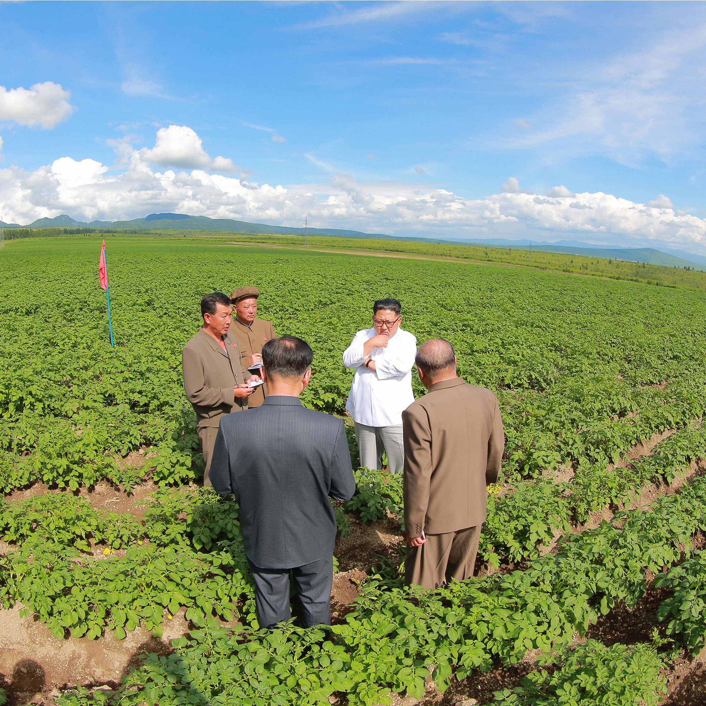
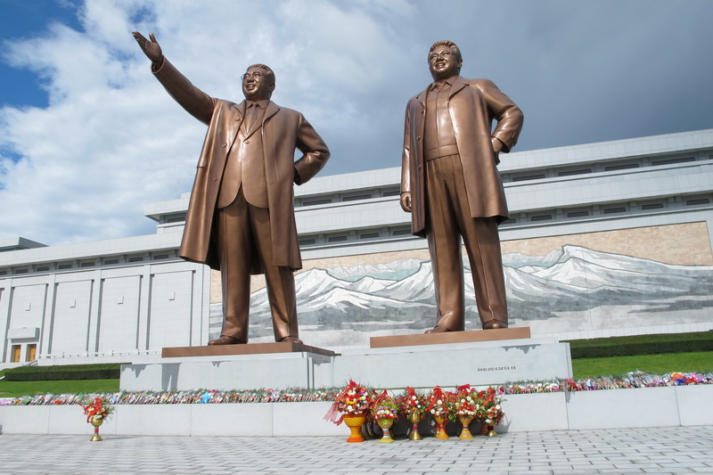
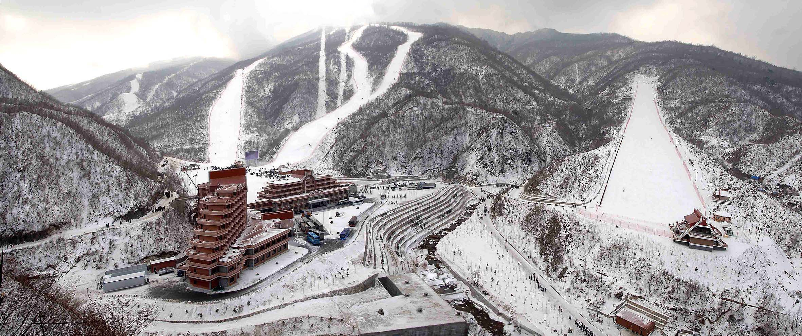
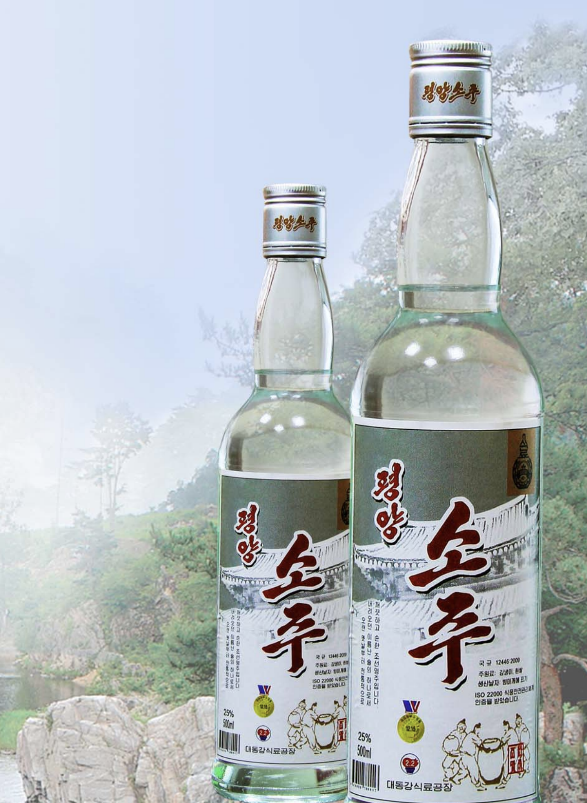

The Official North Korean Travel Activity Guide. When you land in Pyongyang, you won't want to waste any time. North Korea has a variety of unique experiences that can't be found anywhere else in the world. Supreme Leader Kim Jong Un has graciously created a Ministry of Tourism to ensure that you won't get bored in your time here.

In the Democratic People's Republic, you will find a variety of communist statues. These statues were built to commemorate the great leaders that once served the people. The statues are some of the largest in the world.

For both avid ski lovers and tourists seeking a break from the city, the Masikryong Ski Resort is perfect. Home to over a dozen trails, the Ski Resort was built to be an olympic-tier destination. Unfortunately, due to Fake Korea being mean, no events were held during the 2018 Korean Olympics here.

Have fun with the strongest Soju in Asia. Allow your senses to be dulled by the flavorful brew. Soju is a tasty alcoholic beverage made from rice or a mixture of other grains. Just be careful not to pour your own drink, because in Korea, this is considered bad luck.
Get into some trouble with our team at Room 39. This dedicated team will teach you the ins and outs of cyber crime, sex trafficking, the international drug trade, and so much more. If you do well in your time here, you might even get to take home a commission. (Just be careful to avoid the United Nation's overzealous police corps.)